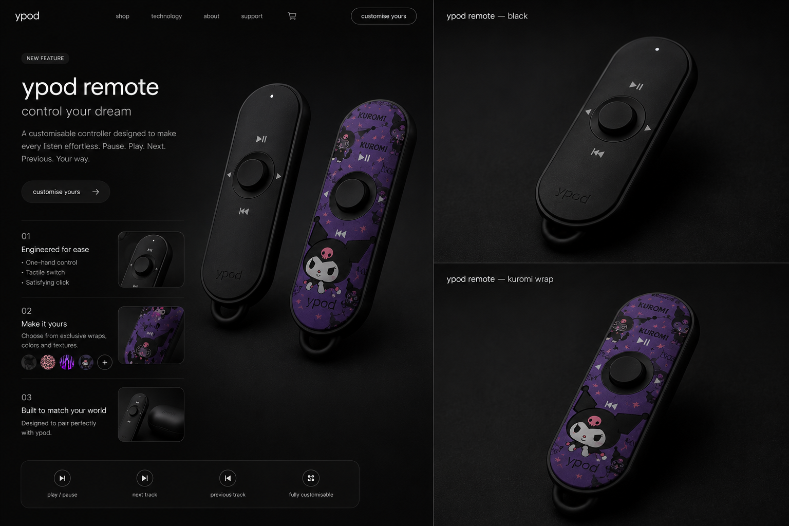
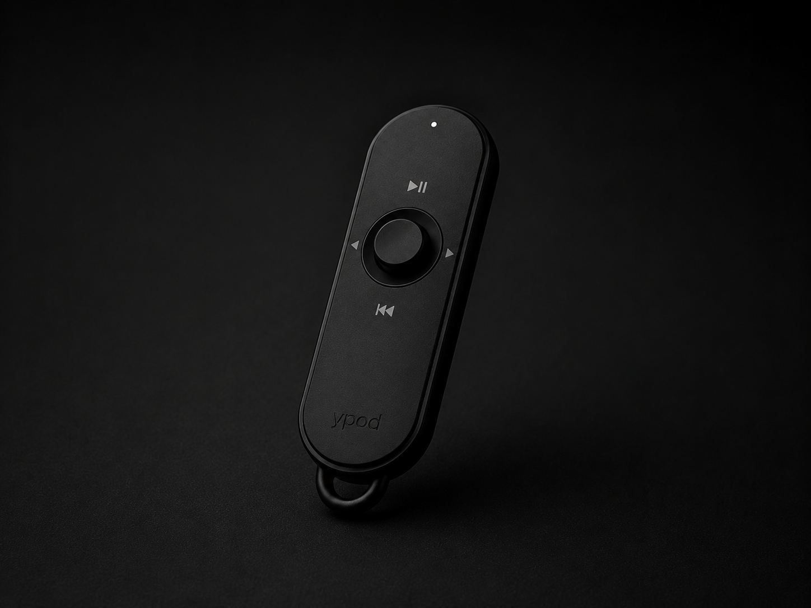
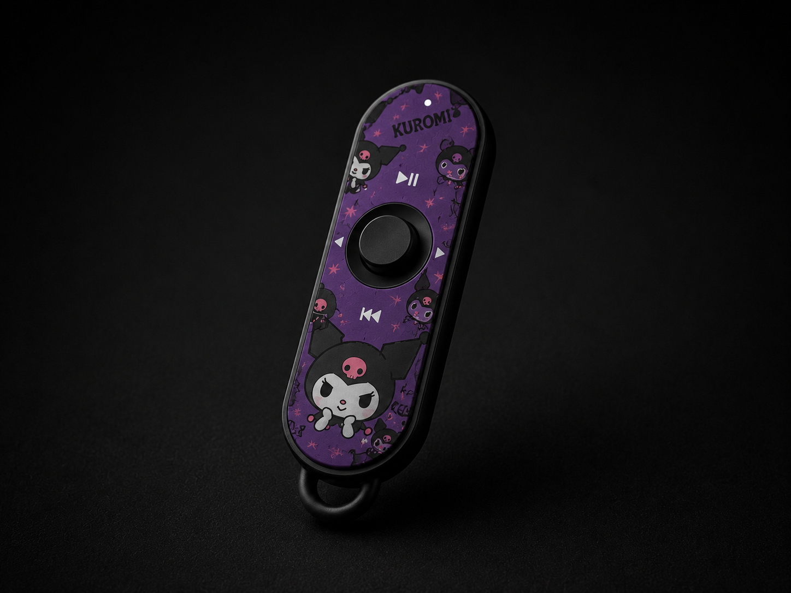

grand vision
build a whole brand around sleep audio.
ypod is a Nigerian-born sleep audio ecosystem: earbuds, remote control, customization, 3D product experiences, ecommerce, and a calm bedroom culture around the tagline in my dream.
private pitch room
grand vision
ypod is a Nigerian-born sleep audio ecosystem: earbuds, remote control, customization, 3D product experiences, ecommerce, and a calm bedroom culture around the tagline in my dream.
simple, snug, light, matte black, quiet, intimate, premium, and made for night use.
people who fall asleep with music, podcasts, prayer, sleep sounds, or background noise.
hardware plus personalization: earbuds, remote, wraps, routines, ecommerce, and 3D customizer.


sleep audio ecosystem
research logic
why current earbuds fail
Normal bluetooth earbuds are made for movement, calls, touch control, and lifestyle use. Sleep creates different forces: pillow pressure, ear canal angle, rotation, long wear time, heat, and accidental touch.
what must be studied
Concha dimensions, cymba concha, cavum concha, tragus, anti-tragus, ear canal angle, shell protrusion, nozzle angle, and pillow contact all affect whether the product can actually be slept in.
category map
Study Ozlo, Soundcore Sleep, QuietOn, Kokoon, Apple, Samsung, Sony, and JBL. The opportunity is not just audio quality. It is sleep comfort, identity, personalization, and bedroom ritual.
Real ear, no branding. Highlight concha, cymba concha, cavum concha, tragus, anti-tragus, and ear canal to understand available space.
Place current YEMA-1 in the ear and ask: how much protrudes, what touches the pillow first, and where pressure concentrates.
Show ear, pillow, and earbud in cross-section with pressure zones and compression zones. This turns design opinion into evidence.
Compare flat oval pebble, flattened circle, concha-shaped organic bean, and half-moon sleepbud in the same ear at the same scale.
product requirements


yema-1
A simple sleep earbud: circular face, flat front disc, uniform thickness, soft edge radius, matte black body, subtle deeper-black ypod logo, soft silicone tip, no stem, no visible earbud LEDs.
yema pro
A premium low-profile sleep earbud built from anatomy research: flatter pebble/oval form, wider pressure distribution, deeper concha seating, and angled nozzle following the ear canal.
logo system
Logos are text marks: ypod and yema. Black product uses a deeper black logo. Grey version uses deeper grey. No loud print, no bright mark.
future render rules
Future images must preserve silhouette, body proportions, nozzle dimensions, edge radius, face shape, logo placement, and material language.
image set needed
Front, side, rear, floating pair, in-ear shot, case shot, exploded view, website hero, pressure simulation, concha study, and in-ear comparison.
validation
Comfort over 6-8 hours, heat, rotation during sleep, pillow pressure, tip sizing, hygiene, battery behavior, and phone-first control acceptance.
remote and 3d customizer


ypod remote
A small bedside controller for pause, play, next, previous, sleep sound control, and a dream button that starts a saved bedtime routine.
dream button
It can trigger a saved sound, preferred volume, sleep timer, fade-out, or favorite night preset. This makes ypod feel like a system.
custom wraps
Matte black is the base. Wrapped editions and user-uploaded designs create collectible personalization without making the brand childish.
Use Hunyuan3D or another image-to-3D tool to create remote.glb from the black remote reference. Pick geometry, not texture quality.
Treat the GLB as geometry only. Override body material with matte black, high roughness, low metalness, subtle studio lighting, and shadows.
Do not trust generated logo geometry. Apply play/pause, previous, left, right, LED dot, and subtle ypod logo as clean overlays.
Apply matte black, Kuromi, gothic, minimal, and user-uploaded textures to the front face or fallback overlay plane.
floating 3D remote, slow auto-rotate, drag rotation, dark studio scene, lazy loading.
thumbnail selector, selected wrap name, reset, upload JPG/PNG, preview only.
if UV mapping fails, keep GLB matte black and place a rounded overlay plane above the face.
add remote to cart, save design placeholder, upload your own wrap CTA.
website and ecommerce
pitch and commerce funnel
see ypod as a sleep-tech brand with a strong visual identity.
learn why sleep earbuds need different fit, controls, and materials.
choose the remote, select a wrap, upload a design, and preview it.
join waitlist, save design, add to cart, or pitch the product family.
funder pitch
People already sleep with audio, but normal earbuds are built for daytime. They create pressure, touch mistakes, phone friction, and poor comfort.
YPOD builds sleep-first audio hardware: YEMA-1 for simplicity, YEMA PRO for side sleepers, and YPOD Remote for bedside control.
The product system mixes ergonomic research with culture: matte design, customization, Nigerian-born identity, and bedroom ritual.
Hardware sales can expand into wraps, limited drops, uploaded designs, dream routines, and a product customization platform.
lock YEMA-1 geometry, brand language, landing site, remote section, and waitlist.
prototype YEMA PRO comfort using concha studies, pressure simulations, and fit testing.
build the remote customizer with GLB geometry, wrap textures, and upload preview.
validate demand, pitch funders, manufacture prototypes, and expand into drops/routines.